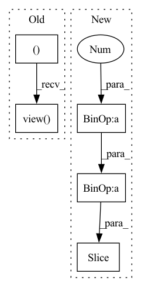

Pattern ID :33371

Before Change
//!! TODO: use mask matrix. It"s slow now.
batch_size = y.size(0)
scores = torch.ones(batch_size, 1 + self.n_neg, device=y.device) //positive sample in the first position.
y_expand = torch.cat((y, y))
for i in range(batch_size):
scores[i, :] = torch.cat((y_expand[i].view(-1), y_expand[i + 1:i + 1 + self.n_neg]))
scores = scores / self.temperature
return scores //(batch_size, 4)
After Change
if user_embedding.shape[0] * (self.n_neg + 1) != self.index0.shape[0]: // last batch
batch_size = user_embedding.shape[0]
index0 = self.index0[:batch_size * (self.n_neg + 1)]
index1 = self.index1[:batch_size * (self.n_neg + 1)]
index0[np.where(index0 >= batch_size)] -= batch_size
index1[np.where(index1 >= batch_size)] -= batch_size
In pattern: SUPERPATTERN
Frequency: 3
Non-data size: 5
Instances
Fragment ID: 96103896
Project Name: datawhalechina/torch-rechub
Commit Name: d0461152ddffad7a6bf7c7532b7b540094623e95
Time: 2022-06-07
Author: icewwl@163.com
File Name: torch_rechub/models/matching/youtube_sbc.py
M Class Name: YoutubeSBC
N Class Name: YoutubeSBC
M Method Name: forward(2)
N Method Name: forward(2)
M Parent Class: torch.nn.Module
N Parent Class: torch.nn.Module
M File Name: torch_rechub/models/matching/youtube_sbc.py
N File Name: torch_rechub/models/matching/youtube_sbc.py
M Start Line: 55
M End Line: 80
N Start Line: 60
N End Line: 87
'>
Before Change
// batch, head, time1, 2*time1-1.
zero_pad = torch.zeros(
(*x.size()[:3], 1), device=x.device, dtype=x.dtype
)
x_padded = torch.cat([zero_pad, x], dim=-1)
x_padded = x_padded.view(*x.size()[:2], x.size(3) + 1, x.size(2))
x = x_padded[:, :, 1:].view_as(x)[
:, :, :, : x.size(-1) // 2 + 1
] // only keep the positions from 0 to time2
After Change
ones = torch.ones((x.size(2), x.size(3)), device=x.device)
x = x * torch.tril(ones, x.size(3) - x.size(2))[None, None, :, :]
return x[..., : pos_len // 2 + 1]
def forward(
self,
'>
Fragment ID: 96103891
Project Name: speechbrain/speechbrain
Commit Name: 84bca108f8c3739bc2f058bab7e43db32c46e090
Time: 2022-07-01
Author: dominik.wagner@th-nuernberg.de
File Name: speechbrain/nnet/attention.py
M Class Name: RelPosMHAXL
N Class Name: RelPosMHAXL
M Method Name: rel_shift(2)
N Method Name: rel_shift(2)
M Parent Class: nn.Module
N Parent Class: nn.Module
M File Name: speechbrain/nnet/attention.py
N File Name: speechbrain/nnet/attention.py
M Start Line: 470
M End Line: 484
N Start Line: 472
N End Line: 483
'>
Before Change
// batch, head, time1, 2*time1-1.
zero_pad = torch.zeros(
(*x.size()[:3], 1), device=x.device, dtype=x.dtype
)
x_padded = torch.cat([zero_pad, x], dim=-1)
x_padded = x_padded.view(*x.size()[:2], x.size(3) + 1, x.size(2))
x = x_padded[:, :, 1:].view_as(x)[
:, :, :, : x.size(-1) // 2 + 1
] // only keep the positions from 0 to time2
After Change
ones = torch.ones((x.size(2), x.size(3)), device=x.device)
x = x * torch.tril(ones, x.size(3) - x.size(2))[None, None, :, :]
return x[..., : pos_len // 2 + 1]
def forward(
self,
'>
Fragment ID: 96103894
Project Name: speechbrain/speechbrain
Commit Name: a12359c7af7e8ece051b675059d323f7aec86901
Time: 2022-06-22
Author: cornellsamuele@gmail.com
File Name: speechbrain/nnet/attention.py
M Class Name: RelPosMHAXL
N Class Name: RelPosMHAXL
M Method Name: rel_shift(2)
N Method Name: rel_shift(2)
M Parent Class: nn.Module
N Parent Class: nn.Module
M File Name: speechbrain/nnet/attention.py
N File Name: speechbrain/nnet/attention.py
M Start Line: 469
M End Line: 483
N Start Line: 471
N End Line: 482